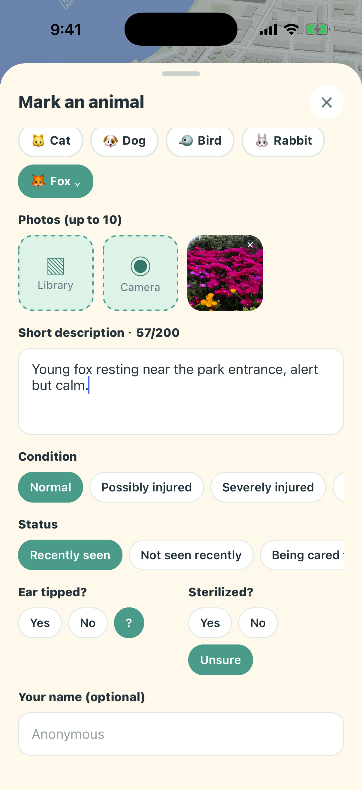
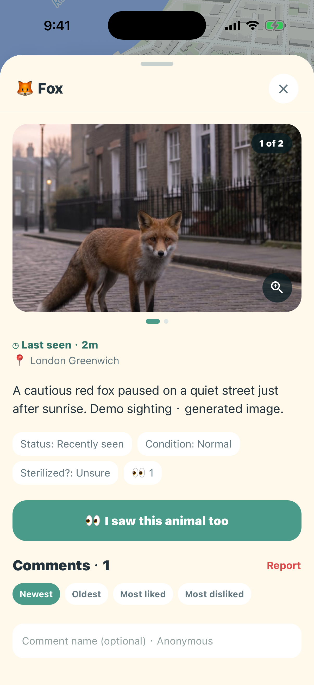
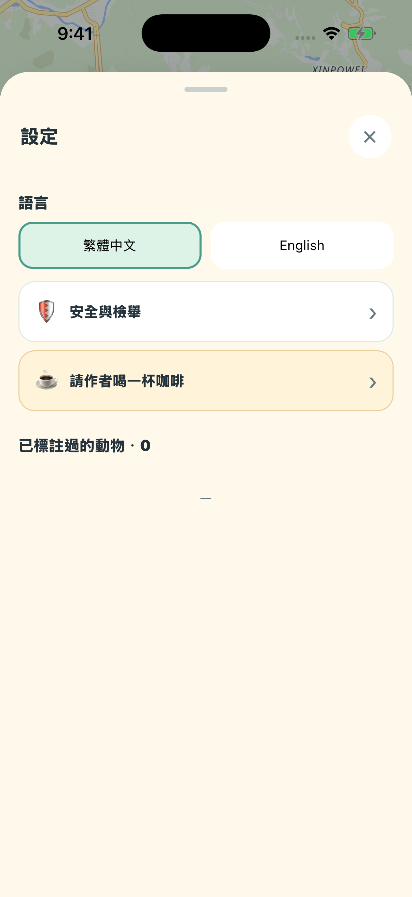

查看附近或其他區域的浪浪紀錄，理解目擊位置與分布。
公益 APP · INTRODUCTION
浪浪地圖
每一次看見，都可能成為下一次救援的線索。
在地圖上記錄世界各地的流浪動物目擊資訊，透過照片、文字與持續更新，讓關心牠們的人更容易接續行動。

把功能留在
真正需要的時刻。
在地圖上記錄世界各地的流浪動物目擊資訊，透過照片、文字與持續更新，讓關心牠們的人更容易接續行動。
用照片、位置與文字留下當下資訊，提供後續關注的重要脈絡。
透過留言與新紀錄補充近況，避免資訊停留在第一次目擊。
讓居民、志工與關心動物的人共享線索，更容易找到下一步行動。
RECOVERED COMPLETE GUIDE看見動物時，
看見動物時，
只要三步。
不用註冊帳號。拍照、確認位置、補上近況，幾分鐘就能讓附近的人與救援者看見。
拍下清楚照片
保留動物外觀與周遭環境，但避免驚嚇或追趕牠。
確認目擊位置
使用目前位置或移動地圖標記，確認是在安全、正確的地點。
補上近況並送出
選擇動物類型、狀態與特徵，讓下一位看到牠的人更容易辨認。
從首頁開始每一個按鈕，
每一個按鈕，
都有清楚用途。
首頁由地圖負責呈現線索；周圍控制負責搜尋、篩選、設定與新增。原始完整操作說明已恢復於此。
目前位置
小藍人代表你的裝置位置；右下定位按鈕可立即回到目前位置。
動物與群組標記
數字標記表示同一區域有多筆資料；點擊後可逐筆選擇。
搜尋欄
輸入動物類型、描述特徵或留言關鍵字，直接前往相關標註。
過濾
只看你關心的動物、狀態或最近一段時間內的目擊。
新增標註
點右下角加號，開始拍照、定位並建立一筆新的動物資料。
關注與推播
關注動物後，只要狀態更新或出現新留言，裝置就會收到通知。

新增一筆標註
選擇動物類型
加入照片與描述
補充狀態與外觀
匿名送出
把「看見牠」變成別人找得到的線索。
點擊首頁右下角加號。先確認目擊位置，再用照片與簡短文字留下最重要的辨識資訊。
包含貓、狗、鳥、兔子、常見野生動物與水生動物。
可拍照或從相簿選擇，最多 10 張；描述最多 200 字。
標示受傷、受困、幼獸、疑似走失，以及剪耳或結紮情況。
名字可留空。若 50 公尺內有同類動物，會先提示是否為同一隻。
拍攝提醒
不要為了拍照追趕、餵食或接近警戒中的動物；先確保自己與動物安全。

查看一隻動物
最後目擊
我也看到牠
照片瀏覽
留言與評分
照片、位置、時間與近況，一次看完整。
點地圖標記即可打開動物資訊。點照片能全螢幕瀏覽、縮放與左右切換。
地址可點擊，地圖會移動到該位置。
不用重建資料，直接補一筆新的目擊位置。
顯示目前張數，多張照片可滑動並放大。
匿名分享近況，並依最新、最舊、最多讚或最多倒讚排序。
找到你真正在意的資訊搜尋與過濾，
搜尋與過濾，
是兩種不同的捷徑。
搜尋適合找特定線索；過濾適合整理目前地圖上要顯示的資料。
搜尋：用關鍵字找動物
搜尋類型、描述和留言內容。結果會顯示命中片段與市／區，點一下就前往地圖位置。
- 藍色項圈
- 右耳剪耳
- 管理員那邊
過濾：縮小地圖範圍
選擇動物類型與最近多久內有人看到，也能依狀態、狀況與結紮資訊篩選。
- 不限時間或自訂天／時／分
- 受傷、受困、疑似走失
- 包含水生動物類型

設定與支援
8 種語言
已標註過的動物
安全中心
請作者喝一杯咖啡
用你的語言，照你的方式使用。
App 會跟隨裝置語言，也能在設定選單中手動切換。設定頁可查看自己標註過的動物、管理安全選項，並自願支持開發。
繁中、簡中、英文、日文、韓文、泰文、越南文、印尼文。
依匿名裝置識別碼找回自己建立的資料。
社群規範、EULA、隱私政策、檢舉與聯絡方式。
完全自願，不會解鎖額外功能或權益。
全球皆可使用
跨城市、跨國家記錄目擊。
不用登入
不要求 Email 或社群帳號。
照片隱私
移除 EXIF，圖片儲存在 Flickr。
完整動物類型
從常見寵物到水生動物。
一起保護動物，也保護彼此
REPORT
BLOCK
DELETE
看見不對勁的內容，立即處理。
浪浪地圖允許匿名分享，也要求每位使用者遵守社群規範。任何威脅、仇恨、不雅、垃圾內容或可能危害動物的位置資訊都可以檢舉。
嚴禁濫用資訊或傷害動物
嚴禁任何有心人士利用 App 的資料追蹤、捕捉、騷擾或傷害動物。民眾如發現相關行為，請在確保自身安全的前提下勇敢制止，立即報警並通報當地動物保護單位。
檢舉並立即隱藏
檢舉後，該內容會先從你的畫面移除，交由管理者處理。
封鎖不當使用者
封鎖後不再看到對方建立的標註與留言。
刪除自己的內容
自己建立的標註、照片與留言，都能隨時移除。
常見問題第一次使用前，
第一次使用前，
你可能想知道。
匿名識別、照片儲存、重複標註、位置修正、通知與安全聯絡方式都完整保留。
一定要註冊或登入嗎？
不用。App 會在裝置上建立匿名識別碼，用來保存你標註過的動物、投票、封鎖與關注設定；不需要 Email 或社群帳號。
照片會存在哪裡？
動物照片儲存在 Flickr，資料庫只保存照片連結與必要資訊。上傳時會移除 EXIF 定位資料，照片也會經過內容審核。
同一隻動物已經有人標註了怎麼辦？
系統會提示附近 50 公尺內的同類動物。若是同一隻，請開啟既有資料並使用「我也看到牠」，不要重複建立。
位置不夠準確，可以修改嗎？
新增標註時可先移動地圖確認位置；送出後也能以新的目擊紀錄補充最新位置。若內容錯誤或涉及安全風險，請使用檢舉。
我會收到哪些通知？
只有你主動關注的動物，在狀態被更新或有新留言時才會通知。可在動物資訊頂部取消關注，或在系統設定關閉通知。
如何聯絡開發者？
可從 App 的安全中心聯絡，或寄信至 hankhuang0516@gmail.com。涉及不當內容的檢舉會優先處理。
完整商店
宣傳圖集。
依照商店目前提供的宣傳素材完整排列；圖片維持原始比例，在手機上會自動換行，不再裁切主要畫面。


使用以前，
值得知道。
這些提醒協助你理解資料界線、平台狀態與合適的使用方式。
安全優先
不要追趕、包圍或徒手接觸緊張的動物；必要時聯絡當地專業單位。
保護位置
敏感個案與可能遭傷害的動物，請審慎公開精確位置。
平台狀態
Google Play 已提供下載，iOS 版本仍在 Apple 審查中。